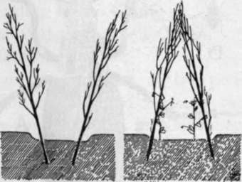

Chapter VIII. Pod-Bearing Vegetables. Peas And Beans
Description
This section is from the book "School Gardening", by W. Francis Rankine. Also available from Amazon: School Gardening.
Chapter VIII. Pod-Bearing Vegetables. Peas And Beans
THE pod-bearing vegetables are more highly esteemed than any others of the general garden crops with the possible exception of Asparagus. This is due to the fact that they are very palatable as well as nutritious. There is a strong resemblance between these members of the Pea family or Leguminosae. The most remarkable feature of the plants is a highly-developed root system, and in consequence the correct culture of Peas and Beans demands a careful preliminary working of the soil. The nitrogen nodules of the roots are extremely interesting developments, and by means of these the pod-bearers are enabled to assimilate and store atmospheric nitrogen.
Peas
The soil must be previously prepared by very deep digging and manuring some time before the crop is sown. Seeds may be sown out of doors from February until the end of June, and the grower who makes successive sowings over this period will be rewarded with a continuous yield of Peas provided that the climatic conditions are favourable. Early sowings can only be attempted in favoured positions, viz., on sunny borders and in light, well-cultivated soil ; on heavy, imperfectly drained land, such a course of procedure is impracticable. The principal sowing commences in the end of March, and further main crop sowings may be made until the end of May. In this way a continuous crop of early, second early, maincrop, and late Peas is obtained.
Fig. 22 nitrogen nodules.
A.-The root system of garden Pea. B.-Nitrogen nodules on Broad Bean root.
In sowing, great care must be taken to give each seed ample feeding space. Thick sowing is wasteful and useless and should be discouraged. Often Peas are sown so thickly that the plants form a hedge of spindly weaklings that experience a difficulty in obtaining sufficient plant food. This weakness of the plant results in diminutive pods and seeds.
The drill should be about eight inches wide and four inches deep, and the seeds must be placed from two to six inches apart in the drill. These are covered with soil to a depth of three inches, and the plants are subsequently thinned out from three inches to six inches apart.
Soon after sowing, some form of protector must be erected ; over the row, \ to keep the ibirds from " destroying the young plants. Black cotton is probably the most useful for this work, and is arranged as shown in Fig. 17. Wire mesh pea guards are effectual and more lasting ; they are easily obtainable from ironmongers. In many districts fish-netting is used.
The distance between the rows of Peas is determined by the height of the plant. Thus two feet peas are planted two feet apart; five feet peas are planted five feet apart, and so on. The rows should run slightly north-east and south-west so that the sun can warm and nourish the plants. In the school garden the two feet or two and a half feet peas are the best to grow on account of the necessarily mixed nature of the crops. The question of the soil is also of importance in selecting the seed, dwarf peas will do best on light dry soils, and tall peas are best suited for heavy land.
Fig. 23. Pea Drill.
A shows the drill open ready for planting ; B, the drill filled in after planting.
In staking Peas place the sticks so that the development of the plants may progress unhindered. Often the sticks are inclined inwards so that they meet at the top ; this system should not be followed, for it crowds the tops of the plants and they do not receive sufficient air and sunlight. The sticks should be vertically in the rows so that light and air have free access. Hazel or Chestnut stakes are the best for use.
Pests
The most common pests that beset the young plants are birds and slugs, and these injure the crop by removing the leaves and growth shoots. The birds are easily kept off the plants by cottoning, and slugs are prevented from their nocturnal raids on the Peas by the aid of soot and lime. A fine tilth around the growing plants also aids in keeping down the pests, for there is scanty harbourage for them.
Pea And Bean Weevil (Sitones Lineatus)
This pest is very different from those already referred to and is not easily dealt with. Often the ravages of the Pea and Bean Weevil are ascribed to birds, or perhaps slugs, and strange to say whole rows of Peas are often destroyed and the cause never really known. This, of course, indicates a weakness in the grower's observational powers, for the insect that causes the damage is easily discovered.
Fig. 24. Staking Peas.
The outwardly sloping sticks allow the plants ample room for growth ; when the stakes slope inwardly the Peas are crowded.
It is a grayish-brown beetle about one-fifth of an inch long; its back is striped, and its underside is of a grayish - clay colour, so that when the Weevil falls off the plant when dis-turbed and turns on its back in its character isti c fashion, it is for a moment invisible. In time, the weevil places its eggs on the stem of the pea or bean that is below the soil, and soon afterwards a new generation of beetles appears to carry on the work of destruction. Lime or soot may be used as a remedy against this pest, and it should be sprinkled over the plants after rain, or early in the morning when the plants are moist with dew. The Best Varieties of Peas :-
Early.-English Wonder, Early Giant.
Maincrop.-Prince of Wales, Sharpe's Queen.
Late.-Autocrat, Gladstone. Broad Beans. These are the hardiest of the pod-bearing vegetables, and will easily stand through the winter months. Thus they may be sown in November, with the result that an early crop is secured in the following summer. Generally the first sowings are made in February. A drill is drawn twelve inches wide and about four inches deep, and the seeds are set four inches apart down each side, placing them in such positions that those in the one row are not opposite those in the other. The drills are then filled in, and on light soils it is necessary to firm the ground above as well as below them. When the plants are about three feet high-earlier should they become infested with Black Fly-the tops should be pinched out so that further growth is retarded and the development of the pods may proceed rapidly.
Fig. 25. The Pea And Bean Weevil.
A.-Enlarged drawing of the beetle showing its scaly appearance, hooked feet, and bristly legs. The Weevil is grayish above and light coloured below so that, when it falls on its back, as it frequently does, it is invisible. B. -Weevil natural size, viz., about + of an inch in length. C.-A Pea plant that has been attacked slightly by the Weevil. When the attack is severe the ribs alone of the foliage are left.
By permission of the "Agricultural Economist and Horticultural Review."
Pests
The Broad Bean is very susceptible to the " blight," which is simply another name for the " Bean aphis " or Black Fly. Aphides are troublesome pests and multiply very quickly, yet they are easily removed by frequent spraying with a soft soap solution. This emulsive wash blocks up the breathing apertures of the aphis, or plant lice, and thus destroys the pests. The aphides spread very quickly from plant to plant, and thus crowded sowings aid the distribution of the pest. In hot, dry weather, the aphides nourish and the plants are least able to withstand their ravages, and the pests, unhindered, suck the plant juices, and finally, if they are not checked, they invade the pods, and complete the destruction of the Broad Bean crop.
The Best Varieties of BroadBeans:-Exhibition Long-pod, Improved Broad Windsor. Dwarf French Beans. Dwarf French, or Kidney Beans, are favourite additions to the garden, but they demand careful culture if fresh and tender produce is to be obtained. The soil on which the beans are to be planted must be thoroughly prepared and deeply dug. The second point for careful consideration is the sowing. Many growers crowd their plants, with the natural result, that they are weak and can only produce undersized pods. Not only is there a loss in size, but also in flavour. Kidney Beans are sown in April at a distance of one foot apart ; many authorities quote six inches and nine inches, but there is no gain in such procedure. The only result can be stringy pods.
Fig. 26. Bean Blight.
(Aphis rumicis)
Fig. 27. crowded dwarf beans.
The Best Varieties:- Canadian Wonder Ne Plus Ultra.
Runner Beans
Scarlet Runners are favourites in most gardens. They are sown in May at distances of nine inches to a foot apart, and at a depth of three inches. They may be grown in the seed plot and transplanted to the rows. As soon as the twining stem of the bean develops, tall stakes must be provided; these stakes may be arranged in many ways, but probably the arran g e m e n t s shown in Fig. 29
Fig. 28. a well developed dwarf bean.
(Contrast with preceding illustration) are the most useful for the school plot. On small plots there is no room for climbing beans. It is, however, possible to cut away the growing shoots and thus obtain a crop from dwarf plants. The Best Varieties : - Champion, Ne Plus Ultra, Best of All.
Fig. 29. Three Methods Of Staking Beans.
Continue to: